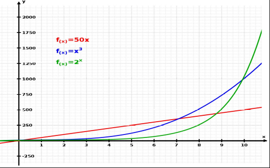

Lecture 10
Paul Fiterau
Based on slides by Nikolaus Huber
Outline
Asymptotic complexity
Space-Time Tradeoff
Measuring & Profiling
Low-level optimization
Premature optimization is the root of all evil
Donald Knuth
Asymptotic complexity
How does our code scale for different inputs?
How do our algorithms scale?

Recap: Big O Notation
\[
O(g(n)) = \{ f: \mathbb{N} \rightarrow \mathbb{N} \;|\; \exists M, n_0 : \forall n \geq n_0 \Rightarrow f(n) \leq M g(n) \}
\]
$O(g(n))$ is the set of all functions that grow at most as quickly as $g$
For example: $2n^2 + n + 42 \in O(n^2)$
More conventionally: $2n^2 + n + 42 = O(n^2)$
Example: Sorting algorithms
Algorithm
Worst-case Runtime
Bubble-sort
$O(n^2)$
Insertion-sort
$O(n^2)$
Quick-sort
$O(n^2)$
Merge-sort
$O(n\;log(n))$
Tim-sort
$O(n\;log(n))$
Discussion O-notation
In O-notation, it does not matter what we measure
Absolute runtime (ms, µs, ...)
Number of instructions
Number of cycles
etc...
All are just some constant factors apart
Discussion O-Notation
O-notation only captures scalability
Gives idea of performance when input becomes arbitrarily large
Does not tell anything about runtime for fixed input
Worst-case often extremely unrealistic (but important for real-time)
Average vs Worst case
Average runtime
Expected runtime for an algorithm given a randomly chosen input of size n
Tends to be more difficult to derive than worst-case
Very often determined through simulation and measurement
Example: Sorting algorithms
Algorithm
WC Runtime
AC Runtime
Bubble-sort
$O(n^2)$
$O(n^2)$
Insertion-sort
$O(n^2)$
$O(n^2)$
Quick-sort
$O(n^2)$
$O(n\;log(n))$
Merge-sort
$O(n\;log(n))$
$O(n\;log(n))$
Tim-sort
$O(n\;log(n))$
$O(n\;log(n))$
Algorithm vs problem complexity
Complexity of a problem = complexity of an optimal algorithm solving it
E.g., sorting has complexity $O(n\;log(n))$
In the general case, we cannot do better than Merge-sort/Tim-Sort
For special inputs we can do better
Restricting the data domain can help
E.g., Dutch Flag Sorting Algorithm has complexity $O(n)$, but restricts inputs to 0, 1 and 2
Data structures vs algorithms
DS complementary aspect to algorithm complexity
DS are often considered more important in algorithm design
Performance of DS operations has drastic impact on algorithm performance
Often many choices (e.g. double linked lists, arrays, trees, hash tables, ...)
Generally more difficult to change DS later in development
Data structures
Each DS comes with a set of operations
Complexity of these operations often depends on the size of the DS
Operation
List of size n
Array of size n
Read k-th element
$O(k) \approx O(n)$
$O(1)$
Update k-th element
$O(k) \approx O(n)$
$O(1)$
Insert k-th element
$O(k) \approx O(n)$
- $(O(n))$
Append element
$O(1)$
- $(O(n))$
Insert and append on array need re-allocation
Conclusion
There is no general best algorithm or best data structure
Have to make decisions based on
Concrete requirements
Expected data size
Expected data distribution
Expected update/insert rate
...
Space-Time Tradeoff
We can often choose whether an implementation
Uses more memory, but needs less computation
Uses more computation, but needs less memory
Choice has to be informed by context, no general solution
Most of the following aspects can be understood as space-time tradeoffs
Look-Up Tables
Pre-computed and stored in memory
Data is accessed often
Examples
Trigonometric functions (sin, cos)
Hash-code tables
...
More space, less computation
Images, Fonts, Bitmaps, ...
Can be stored in different ways
Raw: more space, can be accessed quickly (S/t)
Compressed: less space, but has to be decompressed before access (s/T)
Similar for other kinds of data (audio, text, ...)
Packed/Padded Representation
Individual bits can be stored in different ways
Packed: bits are grouped together (s/T)
Padded: reserve whole byte/word for each bit (S/t)
Bit banding is similar to padded representation
Bit fields
Feature of C to store bit-vectors of any size in a struct
Normally uses packed representation
E.g., the following only needs one 32-bit word:
struct X {
int x:10; // 10-bit int
int y:20; // 20-bit int
};
Alignment
On some architectures, addresses of int/short/char variables must be aligned
This is taken care of by the compiler through padding
struct X {
char a; // 1 byte
short b; // 2 bytes
int c; // 4 bytes
};
Based on alignment, X may use more than 7 bytes
"Fully-aligned" architecture
Variables need to be aligned to word boundries
I.e., on 32-bit machines, all addresses are multiples of 4
Applied to early ARM processors, mostly outdated today
struct X {
char a; // 1 byte
short b; // 2 bytes
int c; // 4 bytes
};
X needs 12 bytes on 32-bit machine
"Self-aligned" architecture
Addresses of n-byte types have to be multiples of n
int addresses => 4, short => 2, char => 1
struct X {
char a; // 1 byte
short b; // 2 bytes
int c; // 4 bytes
};
| a | padding | b | padding | c |
| 1 | 1 | 2 | 2 | 4 bytes |
X needs 10 bytes
"Self-aligned" architecture
To save space, fields in a struct can be sorted
Rule of thumb: sort fields based on their size, starting with biggest
struct X {
int c; // 4 bytes
short b; // 2 bytes
char a; // 1 byte
};
| c | b | a |
| 4 | 2 | 1 |
X needs 7 bytes (3 bytes fewer)
NB: C standard prevents compilers from reordering fields themselves
Sorting left to the programmer
Alignment on ARM Cortex
Can also handle unaligned variables
Load / store to unaligned variables are slower than accesses to aligned variables (s/T)
__packed can be used to enforce struct with unaligned members (see example )
Size of machine code
How many bytes to save one machine instruction?
Depends, different ARM instruction sets:
Original ARM 32-bit ISA
Reduced Thumb 16-bit ISA
Thumb-2, mixed size (16 + 32 bit)
Memory and caches
Some architectures use multiple levels of caches to speed up memory access
Not so relevant to us
Smaller µCs usually have internal RAM but no caches (e.g., Cortex M0+)
Caches make WCET prediction even harder
Sometimes: Scratchpad memories
Optimizing Code
Efficiency normally considered late in development
Once a program is functionally complete and well-tested, we can focus on optimization
However, some decisions have to be made up early (e.g., data structures)
Optimization should always be informed
How to find bottlenecks?
Using a profiler
Tool to measure time spent in individual functions, blocks, ...
By instrumenting the code
Measure time needed for computations you expect to be costly
Through experiments
Remove or duplicate code sections
Profilers (1)
gprof, Tracealyzer, ..., sometimes inbuilt into IDE
Instrumentation-based
Profiler adds statements to capture time at various code locations
Affects measured times (maybe drastically)
Sampling-based
Profiler stops program periodically and records current program counter
Less precise (depends on sampling rate)
Profilers (2)
Simulation-based
Usually quite slow
Often works with simplified assumptions about the HW
In-circuit / tracing
Needs hardware support
Often implemented internally by sampling
How to eliminate bottlenecks?
Choose a better suited algorithm or data structure
Perform low-level optimizations
Optimization is related to refactoring
We want to improve the design
Modifications should not impact functionality of the systems
Regression tests ensure functionality is preserved
Low-level optimizations
Use faster instructions (e.g., bit-shifting vs multiplications)
Use right arithmetic data-types
Floating point, Fixed point, int
Can have a significant impact (factor 10)
Loop optimizations
Sub-expression elimination
Inlining
Algebraic simplifications
Check examples
Examples
x = y % 32;
x = y * 8;
x = y / w + z / w;
x = y & 31;
x = y << 3;
x = (y + z) / w;
Examples
for (i=0; i < n; i++) {
if (condition) {
doSomething();
} else {
doSomethingElse();
}
}
for (i = 0; i < 8; i++) {
sum += array[i];
}
// Loop fission
if (condition) {
for (i=0; i < n; i++) {
doSomething();
}
} else {
for (i=0; i < n; i++) {
doSomethingElse();
}
}
// Loop unrolling
for (int i = 0; i < 8; i += 2) {
sum += array[i];
sum += array[i + 1];
}
Low-level optimizations
A lot is handled by the compiler
Sometimes we need to give hints to the compiler
E.g., C keywords like inline and register
ISO TR 18037:2008: Embedded-C standard